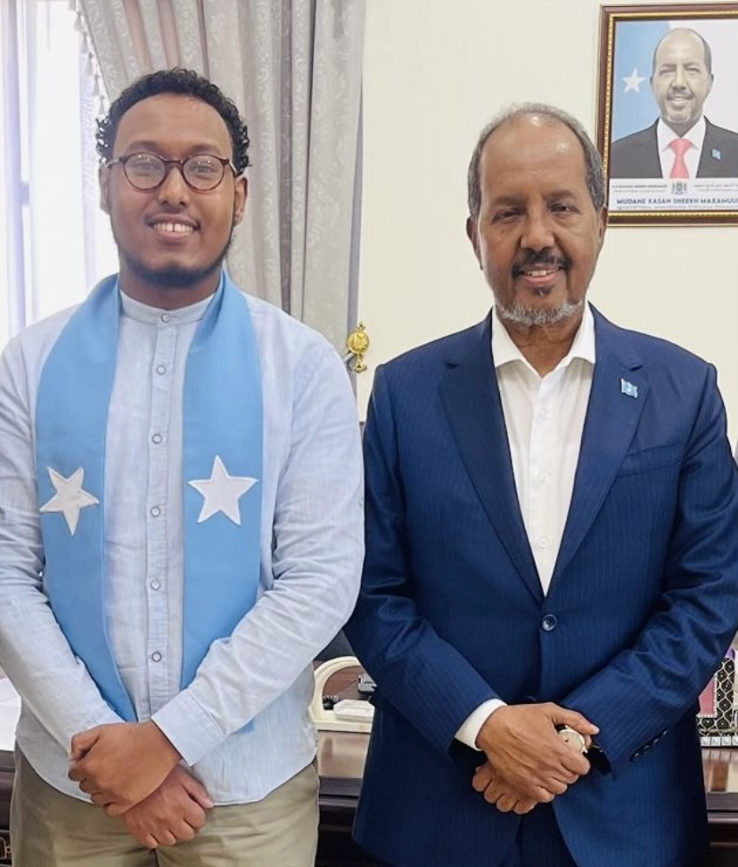

Samater Musa
Email: samatermusa@gmail.com
Contact Number: +447538782532
Employment History
Political Attaché to the State of Somalia in Qatar - Aug 2022 - Feb 2023
- As a Political Attaché, my role focused on spearheading charity fundraising initiatives to aid those suffering from poverty in Somalia. I secured funding by engaging with prominent organizations and the Thani family, facilitating crucial financial support to alleviate hardship and improve living conditions for the affected communities. My efforts underscored a commitment to humanitarian aid and fostered strong collaborative relationships with key stakeholders in Qatar. Following this, I was awarded a certificate of recognition by the President of Somalia, H.E. Hassan Sheikh for exemplary efforts towards humanitarian work.
Client Account Manager - Survation ( Marketing & Political Agency ) Oct 2021 - July 2022
- Responsible for managing relationships with clients, ensuring that their research and polling needs are met. This role involved coordinating with internal teams to deliver projects, interpreting polling data to provide insights. Furthermore, tailored survey methodologies to clients' goals, ensuring accurate data collection. Subsequently, delivering actionable recommendations based on the results.
Client List:
- BBC
- Conservative Party
- Labour Party
- Daily Telgraph
Marketing Manager - Knowledge College - Jun 2020 - Aug 2021
- Oversaw both marketing strategies and studio operations. Responsibilities included developing and executing marketing campaigns to promote educational programs, managing social media presence, and ensuring consistent brand messaging across platforms. I would also be responsible for content creation, overseeing video production, editing, and live streaming of educational materials.
- Additionally, I coordinated studio schedules, managed technical equipment, and worked closely with educators to ensure high-quality delivery of online courses and media. Subsequently, increasing the visibility and reach of Knowledge College’s offerings to the target audience.
Market Research Interviewer - Kantar TNS - May 2018 - Dec 2020
- As a Market Researcher at Kantar TNS, my role involved designing and conducting research to understand consumer behavior and market trends. I gathered data using methods like surveys, interviews, and focus groups, then analyze this data to provide valuable insights. My work helped clients make informed decisions about their products, brands, and marketing strategies
Market Research Telephone Interviewer - Rigour Research - June 2017 - May 2018
- Conducted structured interviews with participants to gather qualitative and quantitative data on various topics. I ensured that each interview was conducted professionally, accurately, and in line with the research objectives. The role involved asking predefined questions, recording responses, and maintaining high attention to detail to ensure data quality.
Internship
-
UBS Summer Analyst Internship Program - Qatar Financial Centre - Doha
- JP Morgan 2 Week Experience Insight - Canary Wharf - London
Education
BSc Economics, Politics and International Relations - Royal Holloway, University of London - Ongoing
A Level - Mathematics, Economics, Business - Featherstone Sixth Form
GCSE'S - Featherstone High School
